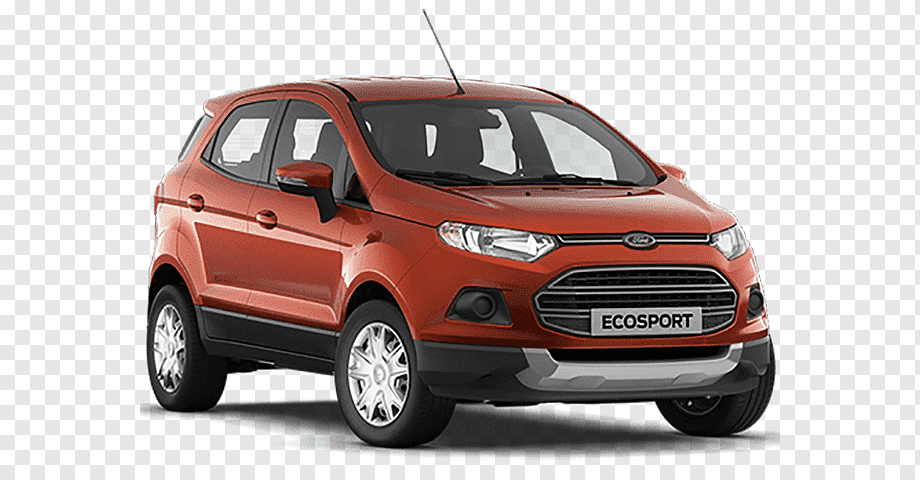
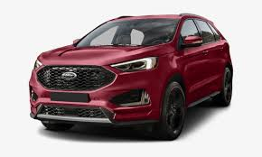
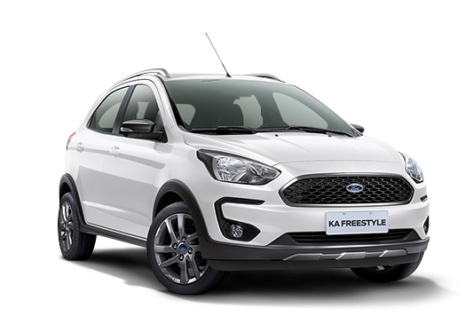
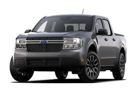

Veiculo com laudos aprovados SEM SURPRESAS - Documentacao transferida para o comprador SEM CUSTO -Tanque cheio de cortesia A InstaCarro oferece garantia de 3 MESES DE CAMBIO E MOTOR para todos os carros do catalogo Agende agora seu test-drive e conheca nossa loja
O Ford Edge 2022 é vendido no Brasil como versão única ST. O novo modelo está equipado com um motor turbo alimentado 2.7 V6 com uma potência de incríveis 335 cavalos e um torque de 54,5 kgfm, que está conectado a uma transmissão automática de oito velocidades. A configuração padrão principal desta versão inclui: 8 airbags, sistema de assistência ao estacionamento, piloto automático adaptativo, sistema de áudio com 12 alto-falantes, dispositivo de ajuste elétrico dos bancos dianteiros e coluna de direção, teto solar panorâmico, rodas de 21 polegadas, bancos de couro e camurça, câmbio de marchas atrás do volante, direção elétrica, sistema start-stop, bagageira com sistema viva-voz e central multimídia.
Ford Ka SE 1.0 2021 – motor 1.0 3 cilindros flex, de 80/85 cv e 10,2/10,7 kgfm de torque, com câmbio manual de cinco marchas. ITENS DE SÉRIE: itens acima + Capa dos retrovisores externos na cor do veículo, Conexão Bluetooth, Entrada USB, Maçanetas externas na cor do veículo e My Connection com Comandos de Voz.
Dando sequência a fase importadora e mirando o segmento premium, a Ford confirmou para 2022 a picape Maverick. Nossa reportagem apurou que a picape será vendida na versão XLT com motor 2.0 EcoBoost ligado ao câmbio automático de oito velocidades e tração integral.
